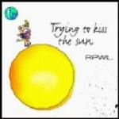

Home Artist links Label link

RPWL - Trying To Kiss The Sun
| Artist: | RPWL |
| Title: | Trying To Kiss The Sun |
| Label: | Tempus Fugit 20678 |
| Length(s): | 60 minutes |
| Year(s) of release: | 2002 |
| Month of review: | [06/2002] |
Line up
Yogi Lang - vocals, keyboards
Karlheinz Wallner - guitars
Phil Paul Rissettio - drums
Andreas Wernthaler - keyboards
Stephan Ebner - bass
Tracks
| 1) | Trying To Kiss The Sun | 3.45
|
| 2) | Waiting For A Smile 7.04 |
|
| 3) | I Don't Know (what It's Like) | 4.32
|
| 4) | Sugar For The Ape | 5.03
|
| 5) | Side By Side | 8.35
|
| 6) | You | 6.49
|
| 7) | Tell Me Why | 5.08
|
| 8) | Believe Me | 5.14
|
| 9) | Sunday Morning | 4.29
|
| 10) | Home Again | 8.52
|
Summary
The music
Opener and title track Trying To Kiss The Sun clearly shows you what RPWL is about: progressive music, rather song oriented, with poppy edges.
Waiting For A Smile once again starts a gentle track, with polished vocals on guitar. Well constructed, but far from shocking. The middle part, which is rather electronic, suggests a space ship taking off, for some reason, to set up the track for a return to its origin.
I Don't Know (What It's Like) starts a bit more up tempo, but also rather poppy, sort of like later Irrwisch. I could have done without this one quite easily.
Sugar For The Ape starts at cocktail party, but quickly moves to its rocky riff basis, spicing up the dish a bit. The melodic elements remain near, however, making this a nice track, enhanced by the solo piano fade out which seems to almost quote Court Of The Crimson King.
Side By Side uses its length to create a nice build up, from the slow singer songwriter start moving up towards a near orchestral (albeit electronic) level. The middle section sees the return of the acoustics, enhanced by background mumbling, samples and electronics. Also a nice one.
You starts strongly to almost immediately take a step back, this sudden bashfulness is waved away quickly enough, though, to make this into a strong track. The memories of Irrwisch return, this time referring to their strong period, however. Very strong track, this is.
Tell Me Why starts rather weakly, but gains momentum as it moves along, ending a rather strong almost jammy track.
Believe Me like its predecessor starts peacefully, showing that Lang's voice isn't quite strong enough to carry section like this, apart from the fact that they really are a bit too peaceful. Despite improving as it moves along, this remains a somewhat sappy effort, notwithstanding the decent enough guitar solo.
Sunday Morning is what its title would suggest, and with that not exactly an asset to this album.
Home Again belies the idea creeping on that this album is gonna end a disappointment, returning to the strengths of a track like You: strong melody, good instrumentation with fitting vocals.
Conclusion
What can I say about this one? It starts not convincingly, and has some bad episodes towards the end as well. Apart from that, there are just a little too many acoustic parts, which aren't very striking, making clear that Lang's voice can't carry a song by itself, not being helped by his accent either. Calling this a weak effort, however, would be quite wrong. With You and Home Again this album contains two very strong tracks, and has quite a few other pretty worthwhile bits as well. And it does turn out a nice overall listen.
© Roberto Lambooy